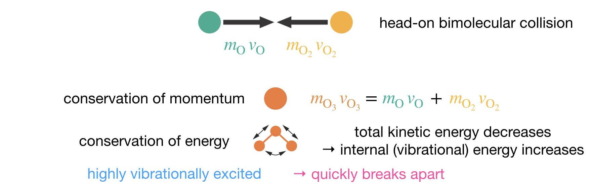

Lecture 7 Unimolecular and Third-Order Reactions
In Lectures 4 and 5 we developed tools for analysing multi-step reaction mechanisms: writing rate equations for each species, identifying reactive intermediates, and using the pre-equilibrium and steady-state approximations when exact solutions are out of reach. Here we apply these tools to three gas-phase reactions. Each appears at first to be consistent with a mechanism consisting of a single elementary step, but consideration of additional factors leads us to multi-step mechanisms that better account for the experimental observations.
7.1 The Lindemann–Hinshelwood Mechanism
At high pressures, the gas-phase decomposition of azomethane,
\[\mathrm{CH_3N_2CH_3} \rightarrow \mathrm{C_2H_6} + \mathrm{N_2}\]
follows first-order kinetics:
\[-\frac{\mathrm{d}[\mathrm{CH_3N_2CH_3}]}{\mathrm{d}t} = k[\mathrm{CH_3N_2CH_3}]\]
At first sight, this seems entirely unremarkable. The stoichiometry shows a single reactant molecule falling apart. The simplest mechanism consistent with this stoichiometry is a single unimolecular elementary step, where the molecule spontaneously decomposes via a first-order process, consistent with the data.
But a molecule cannot simply fall apart on its own; it needs enough energy to break a bond. Empirically, we also observe that the rate of this reaction increases with temperature. This temperature dependence tells us that the reacting molecules must overcome an energy barrier: at higher temperatures, a larger fraction of molecules have enough energy to surmount this barrier. In a thermal gas-phase reaction, molecules acquire this energy through collisions with their neighbours.
If collisions supply the activation energy, then the rate should depend on the frequency of these molecular collisions. Collision frequency is proportional to the concentrations of both colliding partners, giving second-order kinetics (\(\nu = k[\mathrm{A}]^2\)). The observed first-order kinetics and the need for collisional activation therefore seem to be incompatible. Something more subtle must be going on.
7.1.1 Separating Activation from Reaction
We need a mechanism that is consistent with both observations: the reaction requires collisional activation, and the kinetics are first order at high pressures. In 1921, Frederick Lindemann proposed a mechanism that separates the activation event (a collision) from the reaction event (unimolecular decomposition):
\[\begin{align} \mathrm{A} + \mathrm{M} &\xrightarrow{k_1} \mathrm{A^*} + \mathrm{M} & &\text{(excitation by collision)} \tag{7.1} \\ \mathrm{A^*} + \mathrm{M} &\xrightarrow{k_{-1}} \mathrm{A} + \mathrm{M} & &\text{(deactivation by collision)} \tag{7.2} \\ \mathrm{A^*} &\xrightarrow{k_2} \mathrm{P} & &\text{(unimolecular decomposition)} \tag{7.3} \end{align}\]
Here, M represents any collision partner (often another molecule of the same species), and A* represents a vibrationally excited molecule. A collision transfers translational kinetic energy into the internal vibrational modes of A; if enough energy accumulates in the right vibrations, the bond can break. Activation and reaction are separate events. A molecule can be activated by one collision, then react at a later time — or it may lose its excess vibrational energy in a subsequent collision before it has a chance to react.
7.1.2 The Lindemann Rate Law
The excited molecule A* is a reactive intermediate: it is formed by excitation (Eqn. (7.1)) and consumed by both deactivation and decomposition (Eqns. (7.2)–(7.3)). A* is short-lived — whether it loses its energy in a subsequent collision or decomposes into products, it does not persist. Its concentration therefore remains small and approximately constant after an initial transient, and we can apply the steady-state approximation. Setting \(\mathrm{d}[\mathrm{A^*}]/\mathrm{d}t \approx 0\):
\[\frac{\mathrm{d}[\mathrm{A^*}]}{\mathrm{d}t} = k_1[\mathrm{A}][\mathrm{M}] - k_{-1}[\mathrm{A^*}][\mathrm{M}] - k_2[\mathrm{A^*}] \approx 0\]
Solving for \([\mathrm{A^*}]\):
\[[\mathrm{A^*}]_\mathrm{ss} = \frac{k_1[\mathrm{A}][\mathrm{M}]}{k_{-1}[\mathrm{M}] + k_2}\]
The overall rate of product formation is then:
\[\begin{equation} \nu = k_2[\mathrm{A^*}]_\mathrm{ss} = \frac{k_1 k_2[\mathrm{A}][\mathrm{M}]}{k_{-1}[\mathrm{M}] + k_2} \tag{7.4} \end{equation}\]
This is the Lindemann rate law (also known as the Lindemann–Hinshelwood rate law, after Cyril Hinshelwood refined Lindemann’s original treatment).
For azomethane, the reactant itself acts as the collision partner, so M = A and the rate law becomes:
\[\nu = \frac{k_1 k_2[\mathrm{A}]^2}{k_{-1}[\mathrm{A}] + k_2}\]
7.1.3 Pressure Dependence
The concentration \([\mathrm{A}]\) appears in both the numerator and the denominator of the Lindemann rate law. We saw in Lecture 5 how rate laws of this form show different behaviour depending on which term in the denominator dominates. Here, the balance between the two terms depends on the pressure, via the concentration \([\mathrm{A}]\). Let us work through the two limiting cases.
At high pressures, \([\mathrm{A}]\) is large, so the deactivation term in the denominator dominates: \(k_{-1}[\mathrm{A}] \gg k_2\). Dropping \(k_2\) from the denominator gives:
\[\nu \approx \frac{k_1 k_2[\mathrm{A}]^2}{k_{-1}[\mathrm{A}]} = \frac{k_1 k_2}{k_{-1}}[\mathrm{A}]\]
The factor of \([\mathrm{A}]\) cancels between numerator and denominator, and the rate depends only on \([\mathrm{A}]\) — the reaction is first order, with an effective rate constant \(k_\mathrm{eff} = k_1 k_2/k_{-1}\). This is consistent with the observed first-order kinetics of azomethane at high pressures.
At high pressure, collisions between molecules are frequent, and an excited molecule undergoes many collisions before it has a chance to decompose. Excitation and deactivation therefore reach equilibrium on a timescale much shorter than the decomposition, so the concentration of A* is maintained at its equilibrium value. The rate-determining step is the slow unimolecular decomposition of A*.
At low pressures, \([\mathrm{A}]\) is small, so the decomposition term dominates: \(k_{-1}[\mathrm{A}] \ll k_2\). Dropping \(k_{-1}[\mathrm{A}]\) from the denominator gives:
\[\nu \approx \frac{k_1 k_2[\mathrm{A}]^2}{k_2} = k_1[\mathrm{A}]^2\]
The factor of \(k_2\) cancels, and the rate now depends on \([\mathrm{A}]^2\) — the reaction is second order.
At low pressures, collisions are infrequent, and once a molecule is excited it decomposes before it encounters another molecule that could deactivate it. Every excitation leads to reaction, so the rate-determining step is the excitation collision itself.
We started with two empirical observations about the decomposition of azomethane: the reaction follows first-order kinetics at high pressures, yet it is thermally activated — molecules must acquire energy through bimolecular collisions to react. These observations seemed contradictory. The Lindemann mechanism accounts for both by separating activation from reaction. Collisions excite molecules, but at high pressures excitation and deactivation equilibrate so rapidly that they are invisible to the experimenter. The observed kinetics reflect only the slow unimolecular decomposition of A*.
However, the Lindemann mechanism also makes a further prediction: as the pressure falls and collisions become less frequent, the pre-equilibrium between A and A* breaks down; the rate-determining step shifts from decomposition to excitation, and the kinetics therefore switches from first order to second order (Figure 7.1). Following Lindemann’s prediction in 1921, this transition to second-order kinetics at low pressures was observed experimentally in 1927, providing strong evidence that this apparently simple unimolecular decomposition is actually a complex multistep process. This is a good example of the interplay between experiment and theory: the mechanism was proposed to explain existing data, but it also made a new, testable prediction — and confirming that prediction gave us much greater confidence in the mechanism than explaining the original data alone.
![Pressure dependence of the effective rate constant predicted by the Lindemann mechanism. The effective rate constant $k_\mathrm{eff}$ is defined by writing the rate as $\nu = k_\mathrm{eff}[\mathrm{A}]$. The vertical axis shows $k_\mathrm{eff}$ as a fraction of its high-pressure limiting value $k_\infty = k_1 k_2/k_{-1}$. The horizontal axis shows the collision-partner concentration $[\mathrm{M}]$ relative to $[\mathrm{M}]_{1/2} = k_2/k_{-1}$, the concentration at which $k_\mathrm{eff}$ falls to half its high-pressure value. At high pressures (right), $k_\mathrm{eff}$ is constant: the rate depends only on $[\mathrm{A}]$, giving first-order kinetics. At low pressures (left), $k_\mathrm{eff}$ is proportional to $[\mathrm{M}]$ (dashed line, slope 1): since $[\mathrm{M}] = [\mathrm{A}]$ for a self-colliding reactant, the rate becomes proportional to $[\mathrm{A}]^2$, giving second-order kinetics.](lecture_7/figures/lindemann_pressure.png)
Figure 7.1: Pressure dependence of the effective rate constant predicted by the Lindemann mechanism. The effective rate constant \(k_\mathrm{eff}\) is defined by writing the rate as \(\nu = k_\mathrm{eff}[\mathrm{A}]\). The vertical axis shows \(k_\mathrm{eff}\) as a fraction of its high-pressure limiting value \(k_\infty = k_1 k_2/k_{-1}\). The horizontal axis shows the collision-partner concentration \([\mathrm{M}]\) relative to \([\mathrm{M}]_{1/2} = k_2/k_{-1}\), the concentration at which \(k_\mathrm{eff}\) falls to half its high-pressure value. At high pressures (right), \(k_\mathrm{eff}\) is constant: the rate depends only on \([\mathrm{A}]\), giving first-order kinetics. At low pressures (left), \(k_\mathrm{eff}\) is proportional to \([\mathrm{M}]\) (dashed line, slope 1): since \([\mathrm{M}] = [\mathrm{A}]\) for a self-colliding reactant, the rate becomes proportional to \([\mathrm{A}]^2\), giving second-order kinetics.
You should be able to: Apply the SSA to the Lindemann mechanism to derive the rate law \(\nu = k_1 k_2[\mathrm{A}][\mathrm{M}]/(k_{-1}[\mathrm{M}] + k_2)\), and predict the reaction order at high and low pressures by identifying which term dominates in the denominator.
7.2 Third-Order Reactions and Collision Dynamics
7.2.1 The NO Oxidation
The Lindemann mechanism showed that apparent first-order kinetics can hide an underlying bimolecular process. The reverse situation also arises: some reactions have rate laws that seem to require more molecules than can plausibly collide at once. The oxidation of nitric oxide,
\[2\mathrm{NO} + \mathrm{O_2} \rightarrow 2\mathrm{NO_2}\]
has the experimentally determined rate law:
\[\nu = k[\mathrm{NO}]^2[\mathrm{O_2}]\]
The rate law contains three concentration terms, giving an overall order of three. The stoichiometry is consistent with a single termolecular step — two NO molecules and one O2 molecule coming together simultaneously — and such a step would give exactly the observed rate law. But termolecular collisions are physically implausible. A bimolecular collision requires two molecules to be close enough to interact at the same instant; this happens frequently at ordinary pressures. A termolecular collision requires a third molecule to arrive at the same point at the same time, and the probability of this three-way coincidence is negligibly small. The reaction also has an unusual temperature dependence: the rate decreases with increasing temperature. For a single elementary step, we would expect the opposite: at higher temperatures, a larger fraction of molecules have enough energy to overcome the activation barrier. Any proposed mechanism must account for both observations.
One mechanism that is consistent with both observations is a pre-equilibrium in which NO first dimerises:
\[\mathrm{NO} + \mathrm{NO} \underset{k_{-1}}{\stackrel{k_1}{\rightleftharpoons}} (\mathrm{NO})_2\] \[(\mathrm{NO})_2 + \mathrm{O_2} \xrightarrow{k_2} 2\mathrm{NO_2}\]
where the overall rate is
\[\begin{equation} \nu = \frac{1}{2}\frac{\mathrm{d}[\mathrm{NO_2}]}{\mathrm{d}t} = k_2[(\mathrm{NO})_2][\mathrm{O_2}] \tag{7.5} \end{equation}\]
This rate expression contains the intermediate \([(\mathrm{NO})_2]\), which is not directly measurable — we instead want an expression for the overall rate in terms of the reactants only.
If the approach to equilibrium in the first step is fast compared to the second step, we can apply the pre-equilibrium approximation to eliminate it:
\[\begin{equation} K = \frac{k_1}{k_{-1}} = \frac{[(\mathrm{NO})_2]}{[\mathrm{NO}]^2} \tag{7.6} \end{equation}\]
Substituting Eqn. (7.6) into Eqn. (7.5), we get
\[\nu = k_2 K[\mathrm{NO}]^2[\mathrm{O_2}]\]
This reproduces the observed third-order rate law, with effective rate constant \(k_\mathrm{eff} = k_2 K = k_1 k_2/k_{-1}\).
The mechanism also explains the negative temperature dependence. The effective rate constant \(k_\mathrm{eff} = k_2 K\) is a product of two terms that respond to temperature in opposite ways. The rate constant \(k_2\) for the slow second step increases with temperature, as we would expect for a process with an activation barrier. But the equilibrium constant \(K\) for the dimerisation decreases with increasing temperature: two separate NO molecules have far more translational freedom than a single dimer, so the dissociated state has higher entropy. Increasing the temperature drives the system toward higher entropy, shifting the equilibrium away from the dimer and reducing \(K\). In this reaction, \(K\) decreases with temperature faster than \(k_2\) increases, so the net effect is that \(k_\mathrm{eff}\) decreases with temperature.
7.2.2 Formation of Ozone: Why a Third Body is Needed
In the NO oxidation, the third-order kinetics arise because two NO molecules must come together to form the dimer before O2 can react, so \([\mathrm{NO}]^2\) enters through the pre-equilibrium expression. Another gas phase reaction with experimentally observed third-order kinetics is ozone formation, but for a different reason — one that reveals a fundamental constraint on how small molecules can combine.
In the upper atmosphere, ozone forms from atomic oxygen and molecular oxygen:
\[\mathrm{O} + \mathrm{O_2} + \mathrm{M} \rightarrow \mathrm{O_3} + \mathrm{M}\]
with the experimentally determined rate law:
\[\begin{equation} \nu = k[\mathrm{O}][\mathrm{O_2}][\mathrm{M}] \tag{7.7} \end{equation}\]
where M represents a third body; any molecule present in the gas (typically N2 or O2).
This reaction involves only two chemical species combining (O and O2), so we might expect simple bimolecular kinetics, rather than the experimentally observed third-order behaviour. To understand why, we need to consider what happens to the energy released when a new chemical bond forms.
The formation of ozone is highly exothermic, releasing approximately \(107\,\mathrm{kJ\,mol}^{-1}\) when the new O–O bond forms. To see where this energy ends up, consider first a head-on collision in which O and O2 carry equal and opposite momenta. The total momentum is zero, so conservation of momentum requires the product O3 to be stationary — it has no translational kinetic energy at all. All of the initial translational kinetic energy, plus the \(107\,\mathrm{kJ\,mol}^{-1}\) of bond energy released when the new bond forms, goes into internal vibration. The resulting O3* is so highly excited that it dissociates back to O + O2 within just a few molecular vibrations (Figure 7.2). The only way to stabilise the product is to remove this excess vibrational energy before the molecule falls apart, and the only way to do that is through a collision with another molecule — a third body — that can carry the energy away as translational kinetic energy.

Figure 7.2: Schematic of the energy and momentum constraints in ozone formation. A bimolecular O + O2 collision produces a vibrationally excited O3* that retains the bond-formation energy as internal vibration. Without a third body to carry away this energy, O3* dissociates back to reactants.
Writing out the two steps explicitly:
\[\begin{align*} \mathrm{O} + \mathrm{O_2} &\underset{k_{-1}}{\stackrel{k_1}{\rightleftharpoons}} \mathrm{O_3^*} & &\text{(formation of excited ozone)} \\ \mathrm{O_3^*} + \mathrm{M} &\xrightarrow{k_2} \mathrm{O_3} + \mathrm{M} & &\text{(collisional stabilisation)} \end{align*}\]
The excited intermediate O3* is short-lived, so we can apply the steady-state approximation:
\[\frac{\mathrm{d}[\mathrm{O_3^*}]}{\mathrm{d}t} = k_1[\mathrm{O}][\mathrm{O_2}] - k_{-1}[\mathrm{O_3^*}] - k_2[\mathrm{O_3^*}][\mathrm{M}] = 0\]
which we can rearrange to give:
\[[\mathrm{O_3^*}] = \frac{k_1[\mathrm{O}][\mathrm{O_2}]}{k_{-1} + k_2[\mathrm{M}]}\]
The rate of stable ozone formation is:
\[\nu = k_2[\mathrm{O_3^*}][\mathrm{M}] = \frac{k_1 k_2[\mathrm{O}][\mathrm{O_2}][\mathrm{M}]}{k_{-1} + k_2[\mathrm{M}]}\]
O3* dissociation is fast — on a timescale of just a few molecular vibrations — so we expect \(k_{-1} \gg k_2[\mathrm{M}]\). The denominator therefore simplifies to \(k_{-1}\):
\[\nu = \frac{k_1 k_2}{k_{-1}}[\mathrm{O}][\mathrm{O_2}][\mathrm{M}]\]
This reproduces the observed third-order rate law (Eqn. (7.7)), with \(k_\mathrm{eff} = k_1 k_2/k_{-1}\).
We have considered the case of a head-on collision with zero net momentum, but the same reasoning applies to all reactive collisions where A + B → C. Conservation of momentum uniquely determines the product’s velocity, and the translational kinetic energy of the product is always less than the total translational kinetic energy of the two reactants (see Appendix E). Conservation of energy then requires that the excess translational kinetic energy, plus any energy from exothermic bond formation, goes into vibrational degrees of freedom of the product.
This analysis raises a natural question: why don’t all bimolecular reactions require a third body? Ozone formation is a particularly extreme case — a large bond energy (\(107\,\mathrm{kJ\,mol}^{-1}\)) deposited into a triatomic molecule with only three vibrational modes, so the energy per mode is more than enough to cause dissociation. A larger molecule can spread the same energy across dozens of vibrational modes, reducing the excitation in any single bond below the dissociation threshold. Appendix D explores this and other factors that determine whether a reaction can proceed without third-body assistance. In practice, third-body requirements are common in atmospheric chemistry and combustion, where small radicals and atoms combine, but rare for reactions producing larger molecules.
You should be able to: Explain why a termolecular collision is implausible for the NO oxidation reaction, write a pre-equilibrium mechanism that reproduces the observed third-order rate law, and explain why ozone formation requires a third body.
7.3 Key Concepts
- The Lindemann–Hinshelwood mechanism explains how a collision-activated reaction can show first-order kinetics: activation occurs by collision, but at high pressures excitation and deactivation equilibrate rapidly, making only the slow unimolecular decomposition visible.
- Applying the SSA to A* gives the Lindemann rate law, \(\nu = k_1 k_2[\mathrm{A}][\mathrm{M}]/(k_{-1}[\mathrm{M}] + k_2)\), which predicts a transition from first-order to second-order kinetics as the pressure decreases.
- Third-order rate laws do not imply termolecular collisions. Pre-equilibrium mechanisms involving two sequential bimolecular steps can produce apparent third-order kinetics.
- The negative temperature dependence of the NO oxidation arises because the effective rate constant \(k_\mathrm{eff} = k_2 K\) is a product of two competing terms: \(k_2\) increases with temperature, but the equilibrium constant \(K\) for the exothermic dimerisation decreases, and this decrease dominates.
- Highly exothermic association reactions often require a third body to carry away excess energy from a vibrationally excited intermediate. Without this energy transfer, the product dissociates back to reactants.